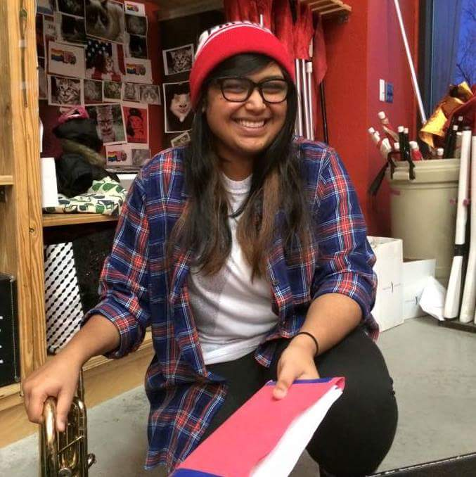

Snigdha Sharma

2015 Marching Band Uniform Chair
2016 Horn Co-Section Leader
2017 Spring Pep Band Conductor
Class: 2018
Hometown: Olathe, KS
College: Arts and Sciences
Major: English
Snigdha Sharma, Sniggie Smalls, Sniggu, Snigs: the woman, the myth, the legend. Born in Liverpool England, raised in Olathe, Kansas and current resident of Philadepliha, Snigdha is a woman of many talents. When she isn't rockin' it on the horn (which she didn't pick up till coming to Cornell, by the way) she can be found playing violin in Chateau's bluegrass band, being a writing tutor in a broom closet, volunteering with Alpha Phi Omega, or enjoying a nice, relaxing rap-along with the entire Hamiliton soundtrack.